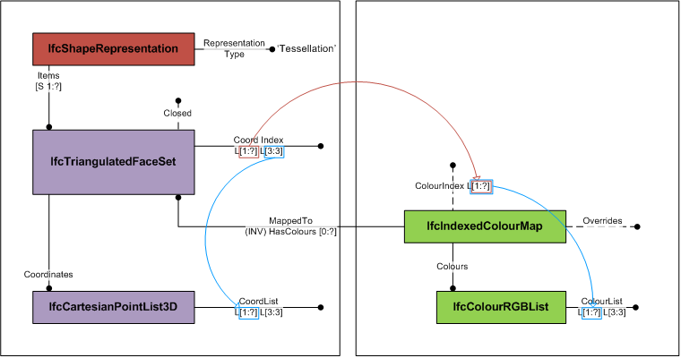
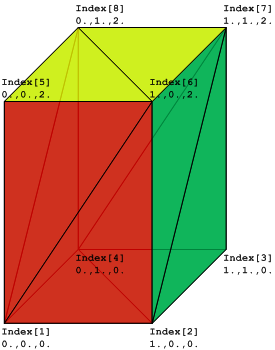

8.12.3.18 IfcIndexedColourMap
| Liste von Indizes für Farbwerte |
The IfcIndexedColourMap provides the assignment of
colour information to individual faces. It is used for
colouring faces of tessellated face sets.
The IfcIndexedColourMap defines an index into an
indexed list of colour information. The Colours are
a two-dimensional list of colours provided by three RGB
values [0 .. 1]. The ColourIndex attribute
corresponds to the CoordIndex of the
IfcTessellatedFaceSet defining the
corresponding index list of faces.
Figure 337 shows the use of IfcTriangulatedFaceSet with colours per face.
|

|
|
Figure 337 — Indexed colour map
|
Figure 338 illustrates an IfcTriangulatedFaceSet represented by
IfcTriangulatedFaceSet.CoordIndex: ((1,6,5),
(1,2,6), (6,2,7), (7,2,3), (7,8,6), (6,8,5), (5,8,1),
(1,8,4), (4,2,1), (2,4,3), (4,8,7), (7,3,4))
IfcCartesianPointList.CoordList: ((0.,0.,0.),
(1.,0.,0.), (1.,1.,0.), (0.,1.,0.), (0.,0.,2.), (1.,0.,2.),
(1.,1.,2.), (0.,1.,2.))
IfcIndexedColourMap.ColourIndex: (1, 1, 2, 2, 3, 3,
1, 1, 1, 1, 1, 1, )
IfcColourRgbList.ColourList: ((1.,0.,0.),
(0.,1.,0.), (1.,1.,0.))
|

|
|
|
Figure 338 — Indexed colour map geometry
|
|
HISTORY New entity in IFC4.
XSD Specification:
<xs:element name="IfcIndexedColourMap" type="ifc:IfcIndexedColourMap" substitutionGroup="ifc:IfcPresentationItem" nillable="true"/>
<xs:complexType name="IfcIndexedColourMap">
<xs:complexContent>
<xs:extension base="ifc:IfcPresentationItem">
<xs:sequence>
<xs:element name="Overrides" type="ifc:IfcSurfaceStyleShading" nillable="true" minOccurs="0"/>
<xs:element name="Colours" type="ifc:IfcColourRgbList" nillable="true"/>
</xs:sequence>
<xs:attribute name="ColourIndex" use="optional">
<xs:simpleType>
<xs:restriction>
<xs:simpleType>
<xs:list itemType="xs:long"/>
</xs:simpleType>
</xs:restriction>
</xs:simpleType>
</xs:attribute>
</xs:extension>
</xs:complexContent>
</xs:complexType>
EXPRESS Specification:
|
ENTITY IfcIndexedColourMap
|
 EXPRESS-G diagram
EXPRESS-G diagram
Attribute Definitions:
Inheritance Graph:
|
ENTITY IfcIndexedColourMap
|
 Link to this page
Link to this page